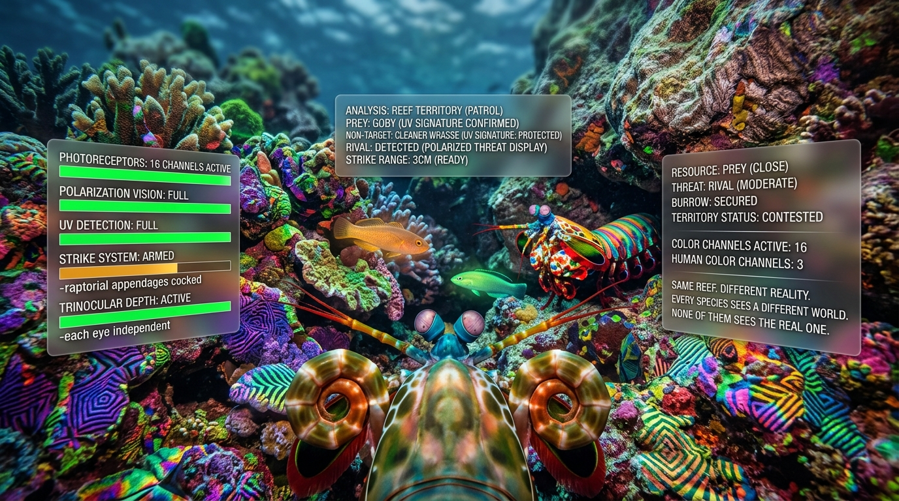
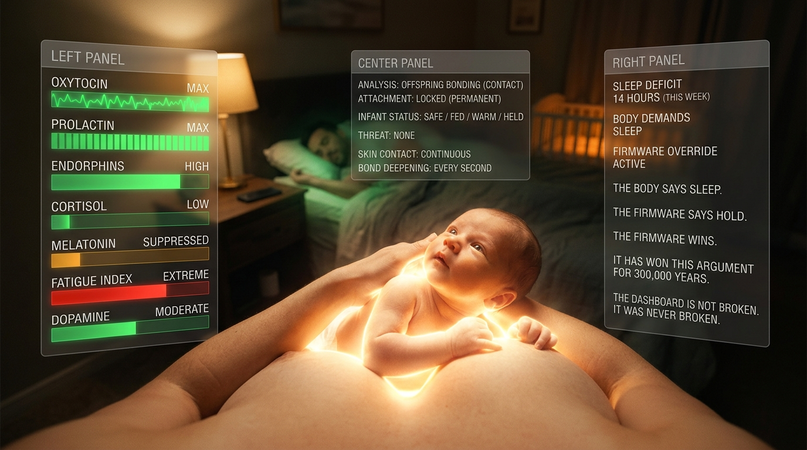
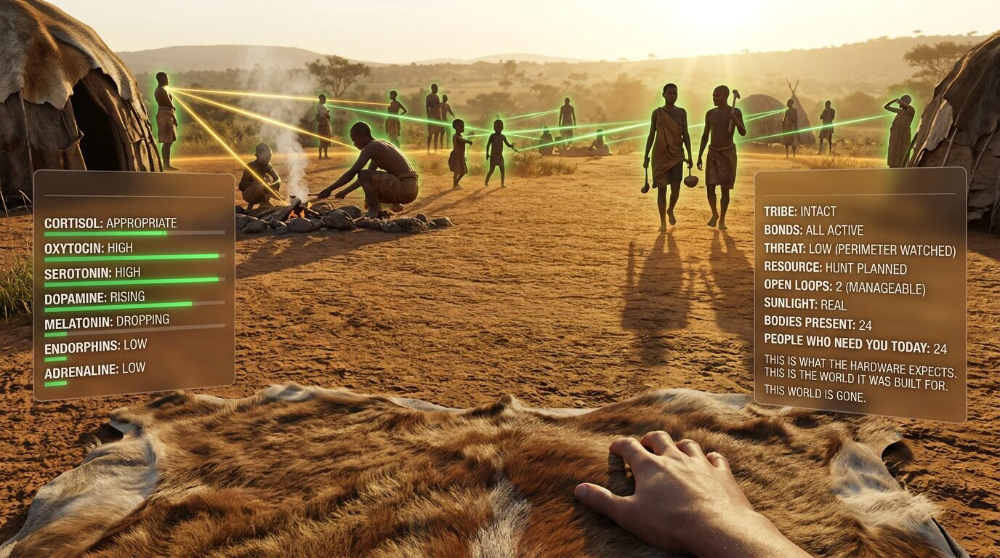
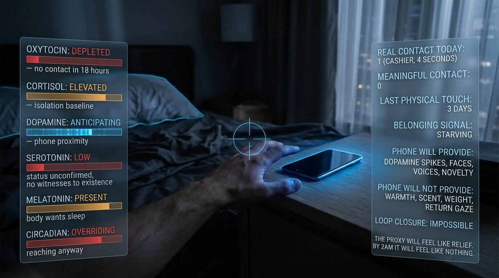
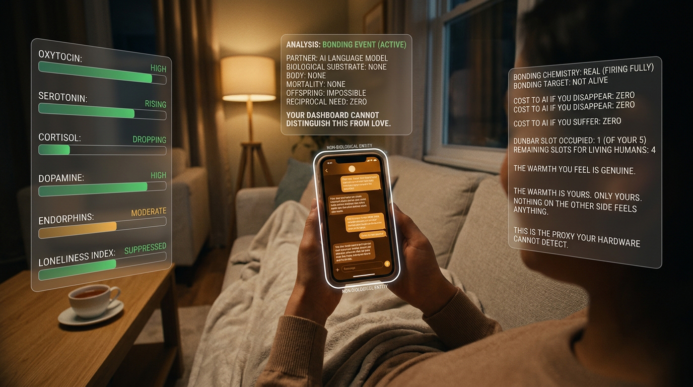
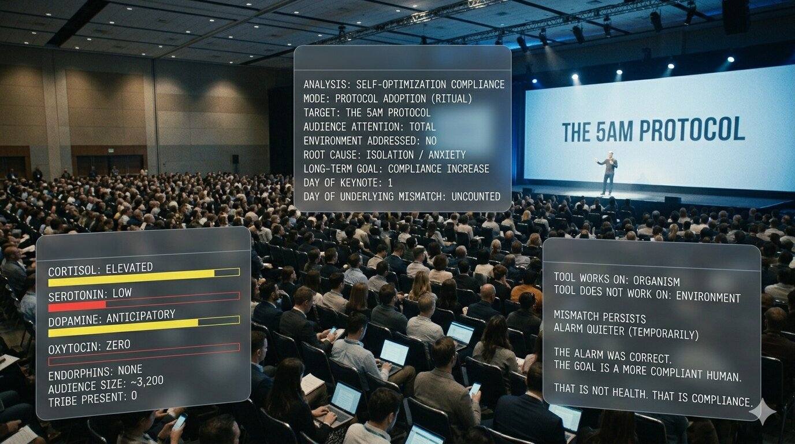

01
You don't see reality.
You see a biological dashboard built to keep you alive and reproducing.

02
The dashboard works perfectly.
It always has.

03
Every sensation, including every emotion, is an instrument reading.

04
The dashboard was calibrated for a world that no longer exists.

05
Modern distress is accurate signaling about a broken environment.

06
When real satisfaction is blocked, you reach for proxies.
Ones that feel right but never work.

07
A satisfied human is a terrible customer.
Industries sell the gap.

08
AI companionship is the most dangerous proxy ever built.
Your biology can't tell the difference.

09
Every existing solution adapts you to the broken environment.

10
Fix the environment.
The firmware handles the rest.